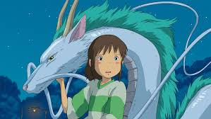

☆Gênero: Romance/ Aventura/ Fantasia
☆lançamento: 18/07/2003
☆diretor(a): Hayao Miyazaki
☆Studio: Studio Ghibli
☆classificação indicativa: L
☆Duração: 2h 5mn
avaliação:★★★★★(4,9)
Sinopse
Chihiro e seus pais estão se mudando para uma cidade diferente. A caminho da nova casa, o pai decide pegar um atalho. Eles se deparam com uma mesa repleta de comida, embora ninguém esteja por perto. Chihiro sente o perigo, mas seus pais começam a comer. Quando anoitece, eles se transformam em porcos. Agora, apenas Chihiro pode salvá-los.